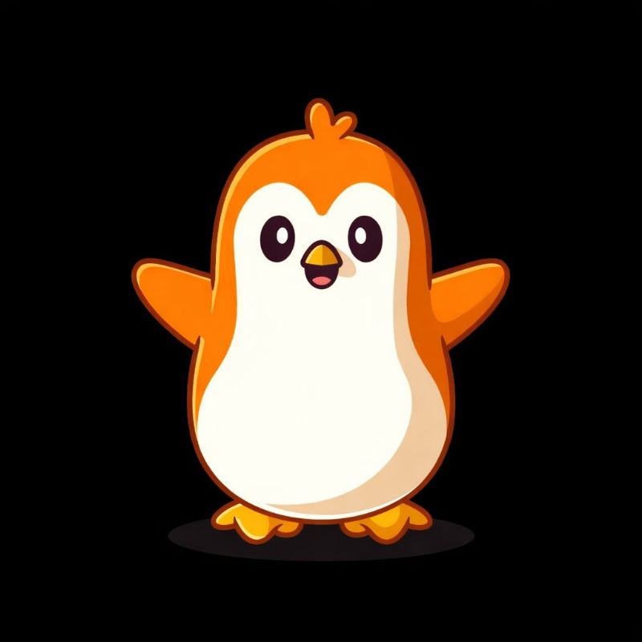

The Fractal Penguin powering the next meme wave on Solana
Community driven meme token inspired by fractal patterns and internet culture.

Community driven meme token inspired by fractal patterns and internet culture.

Fractal Pengu is a community driven meme cryptocurrency built on the Solana blockchain. Inspired by fractal mathematics and internet culture, the project represents creativity, decentralization and the unpredictable beauty of blockchain ecosystems. The penguin mascot symbolizes curiosity, exploration and resilience. Just like fractal patterns expand infinitely, the Fractal Pengu community grows organically through memes, creativity and decentralized collaboration. Every holder becomes part of a larger movement where culture, humor and technology merge together to create something unique in the world of Web3.
The tokenomics of Fractal Pengu are designed to support long term sustainability and community driven growth. Total supply is fixed at 300 million tokens ensuring scarcity while maintaining sufficient liquidity for decentralized trading. 270 million tokens are circulating in the market while 30 million tokens are allocated for vesting to support future development and ecosystem expansion.
The Fractal Pengu community represents the heart of the ecosystem. Built on the principles of decentralization and internet culture, the project encourages creativity, collaboration and participation from every member. From memes to community raids and social media campaigns, the penguins work together to expand the reach of the project across the Solana ecosystem and beyond. Together the community builds a decentralized movement where ideas spread like fractals across the blockchain.